MMO de acción sobre la isla de Lemuy, en Chiloé. Diez villas por conquistar, veinticuatro criaturas de la mitología chilota y una bandera que plantar donde aguantes. Servidor propio, en vivo.
// Since 2026 · por AugustoCLive
Nuevo
República de Lemuy
MMO de conquista en Chiloé · servidor en vivo
Nuevo
Putup
Simulador de creador · seis juegos dentro
Construimos juegos pequeños con ideas grandes. Mecánicas raras, mundos honestos, soundtracks que se quedan. Sin loot boxes, sin atajos, sin prisa.
Juegos
07
Precio
Gratis
Descargas
Cero
Plataforma
Navegador
// 06 · lo último del estudio Servidor en vivo
República deLemuy
Un mundo multijugador entero sobre la isla de Lemuy, en Chiloé. Eliges clase, sales de Puqueldón y avanzas villa por villa peleando con las criaturas de la mitología chilota: el Trauco en el bosque, el Camahueto abriendo la tierra, el Caleuche dando vueltas en el canal. Plantas tu bandera, fundas tu territorio y lo defiendes — porque quitártelo cuesta pararse al lado y aguantar.
Género
MMO de acción
y conquista
y conquista
Plataforma
Navegador
PC y móvil
PC y móvil
Mundo
Isla Lemuy
Chiloé, Chile
Chiloé, Chile
Servidor
Propio
vía Tailscale
vía Tailscale
- WASD caminar
- espacio atacar
- Q habilidad
- F objetivo
- E entrar
- B bote
- T bus
- Enter chat
- en móvil, joystick
Corre en el servidor de casa del estudio, publicado con Tailscale. Si está apagado, la puerta no abre.
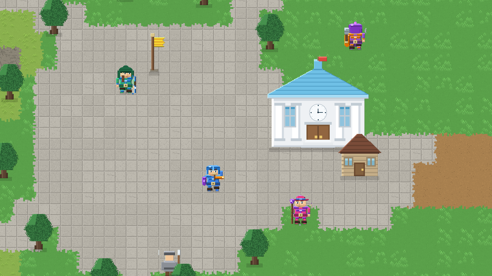
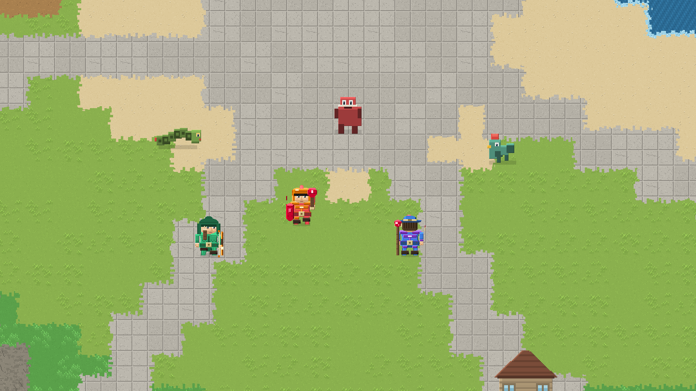
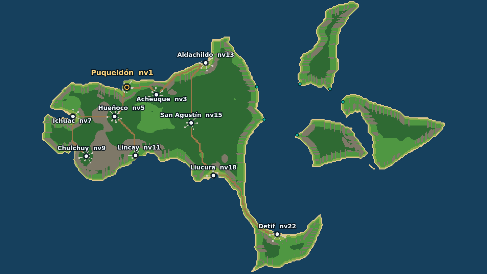
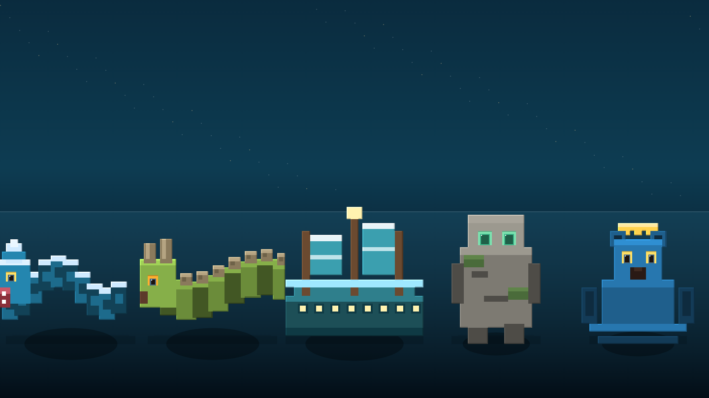
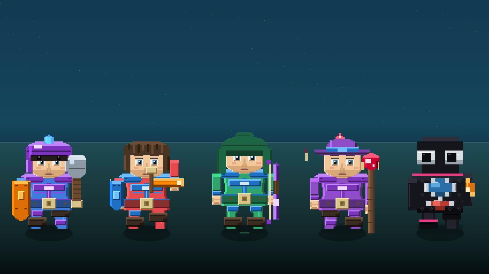
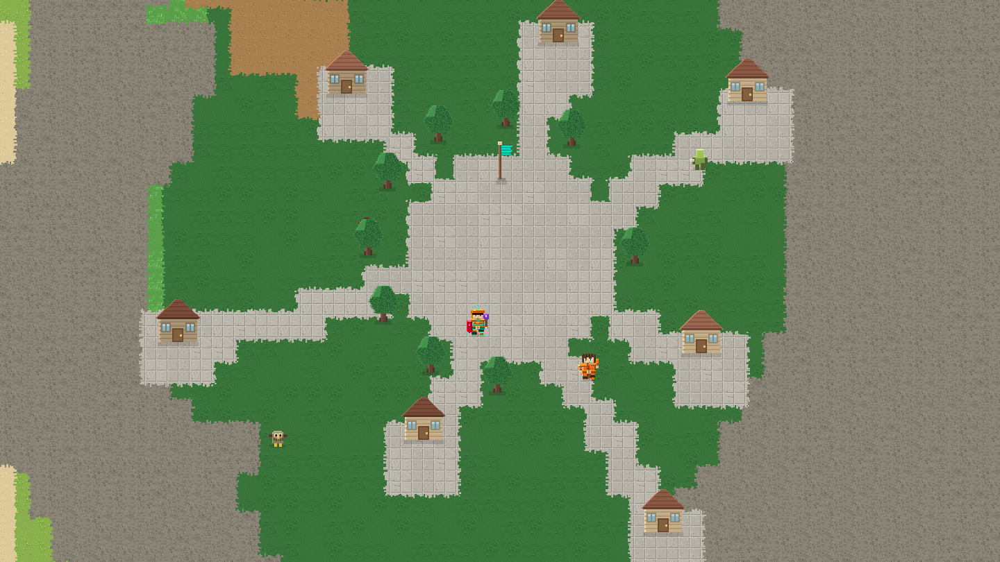
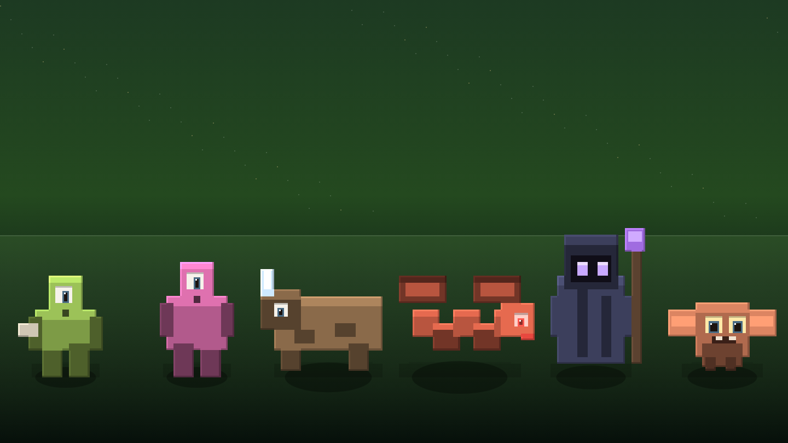
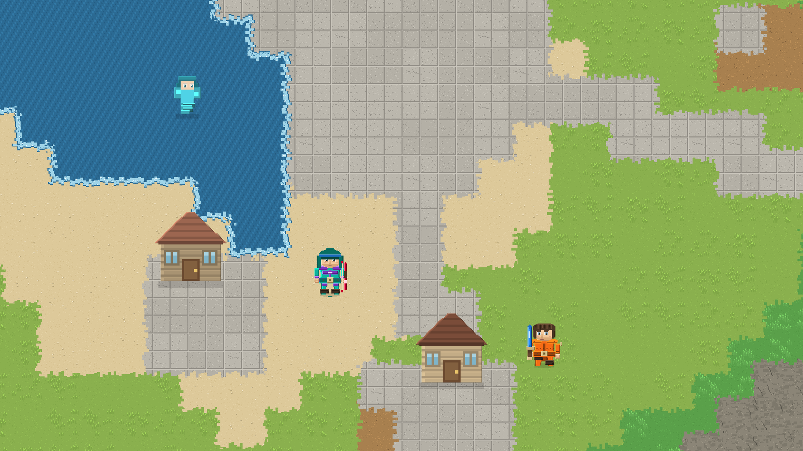
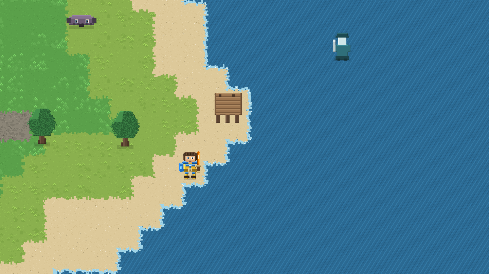
Villas
10
Criaturas
24
Clases
05
Nivel máx
30
Clan
8
Precio
Gratis
// 02 · lo último del estudio Se juega en el navegador
Simulador de creadorputup
Tienes una casa, un ordenador y ningún suscriptor. Grabas una partida, la editas —momentos, título, miniatura— y la publicas; el canal crece, entra dinero ficticio y lo que compras aparece de verdad en la habitación: la silla, el letrero de neón, la vitrina de placas. Dentro del ordenador hay seis juegos, incluido Polenom, un juego de cartas con quince criaturas propias.
Género
Simulación
y arcade
y arcade
Plataforma
Navegador
PC y móvil
PC y móvil
Casa
Seis estancias
y jardín
y jardín
Partida
Se guarda sola
en tu navegador
en tu navegador
- 🏃 Salto neónCarreras 3D · 35 s
- 🎵 Ritmo pixelMúsica · 32 s
- 🐍 Serpiente de likesRetro · 45 s
- 🚀 Órbita viralNaves · 45 s
- 🧠 Memoria viralParejas · 60 s
- 🎴 PolenomCartas · 15 criaturas
Se juega aquí mismo, sin instalar nada y sin conexión después de la primera carga. Todo el progreso se guarda en tu navegador. También existe como aplicación de Android.
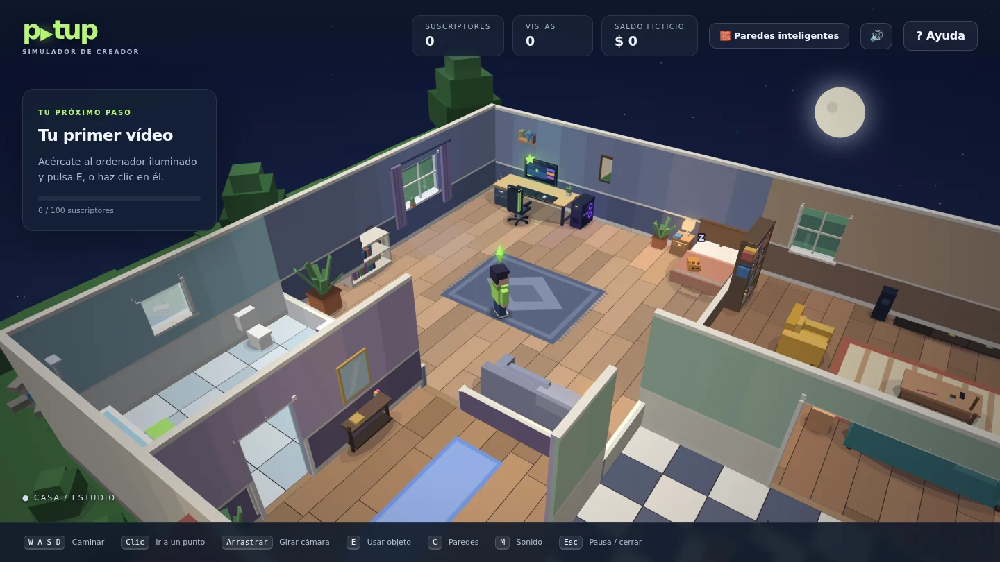
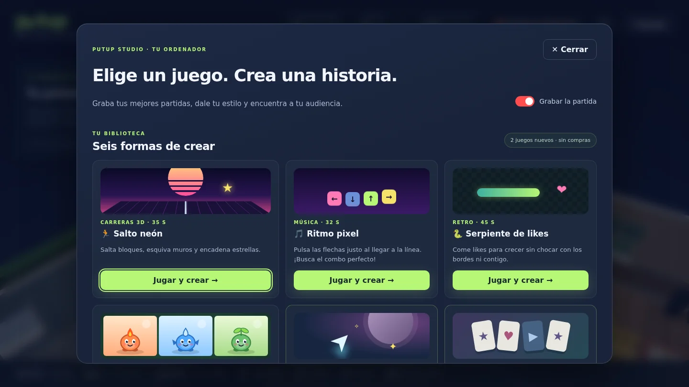
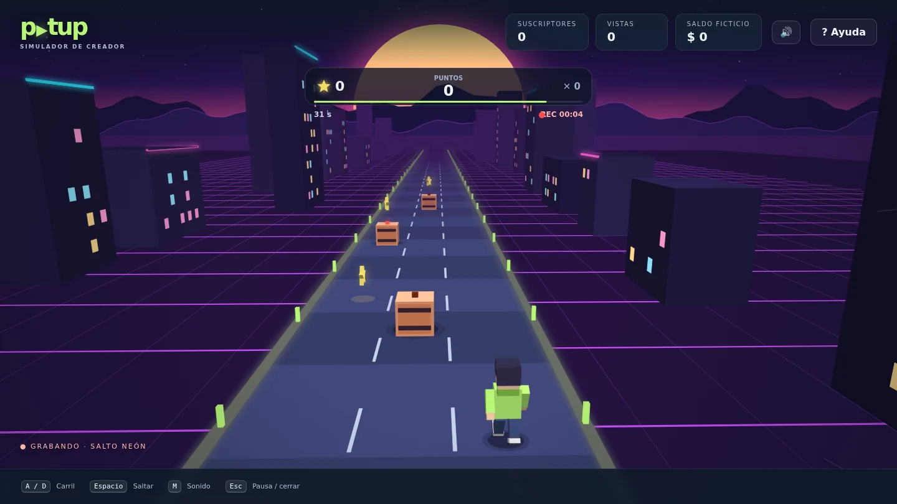
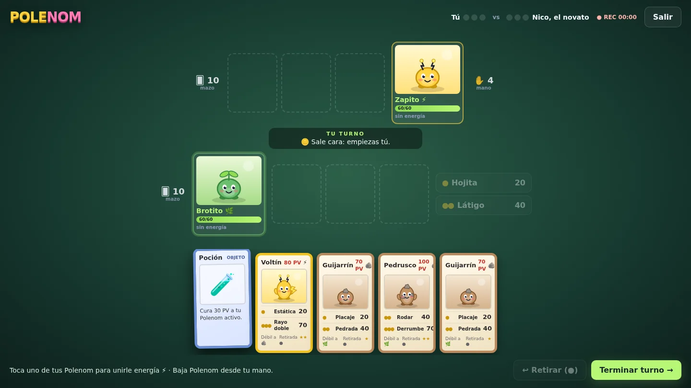
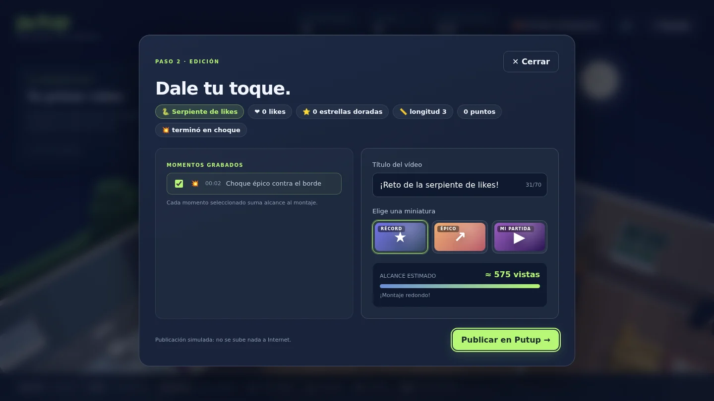
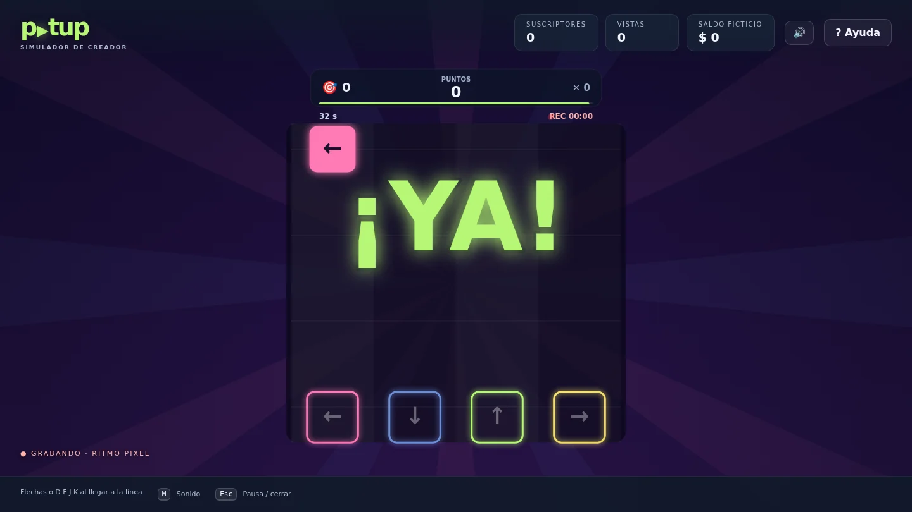
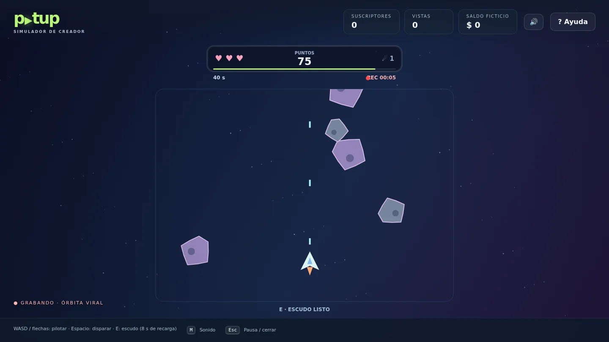
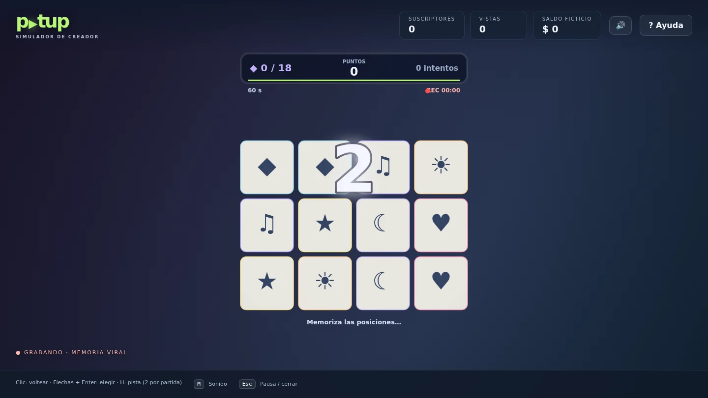
Juegos dentro
06
Estancias
06
Polenom
15
Mejoras
11
Descargas
Cero
Precio
Gratis
Nuestros juegos.
// Catálogo / 07
Dos estrenos · todo gratis
Simulador de creador: grabas partidas en tu casa, las editas y las publicas para que crezca el canal. Seis juegos dentro del ordenador, entre ellos Polenom, un juego de cartas con quince criaturas propias.
Endless de carreras en clave neón. Otra pista, otro ritmo, la misma regla: aguanta lo máximo posible antes de que la velocidad te coma.
Recorre la matriz alternando fila y columna, llena el búfer y sube los démones antes de que el ICE te expulse. Puro nervio y cálculo.
Un botón, dos suelos. Invierte la gravedad para esquivar la ciudad que viene a por ti. Cuanto más lejos llegas, menos margen te queda.
Oleadas de procesos hostiles contra una sola nave. Vectores neón, esquiva constante y un búfer de integridad que no perdona.
Tráfico infinito, tres vidas, un coche azul. Cuanto más lejos llegas, más rápido va todo. Sin tutoriales, sin menús: pulsa y corre.
Juega aquí mismo
v0.7Live
Furious Cars 1
Un juego de AugustoCLive
Tráfico infinito, tres vidas, un coche azul. La pista no acaba: cuanto más lejos llegas, más rápido va todo. Más arriba pisas, más rápido vas, más fácil es pegársela. Sin tutoriales, sin menús: pulsa y corre.
Género
Arcade / Endless
Plataforma
Navegador
Modo
Infinito · vs IA
Récord
Tu mejor marca
// Sobre PoxStar
Una idea obsesiva.
PoxStar es el estudio independiente de AugustoCLive: un solo creador escribiendo cada línea de código, dibujando cada píxel y componiendo cada sonido. Autofinanciado, a su propio ritmo, sin editor.
No creemos en el crunch. Tampoco en los juegos como servicio. Creemos en mecánicas que respetan tu tiempo y en que un buen videojuego puede caber en una tarde de domingo — o en una partida de tres minutos. Síguele en YouTube y en el Discord para ver los juegos nacer en vivo.
// Comunidad / 05
Síguenos
Síguenos
de cerca.
Devlogs, prototipos, builds tempranas directamente de AugustoCLive. Sin egos, sin moderación tóxica, sin spoilers. Sólo lo que hace y por qué lo hace.
O suscríbete al boletín de domingo: